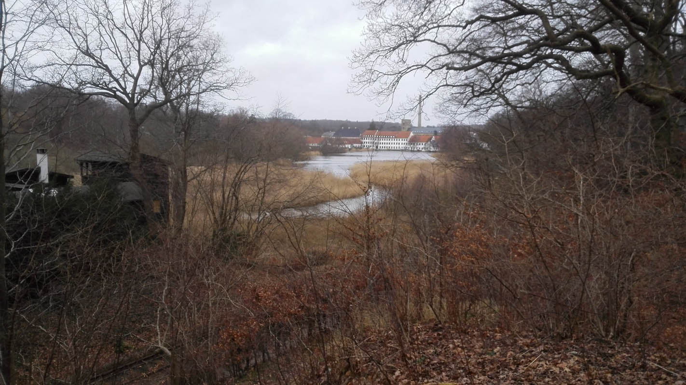
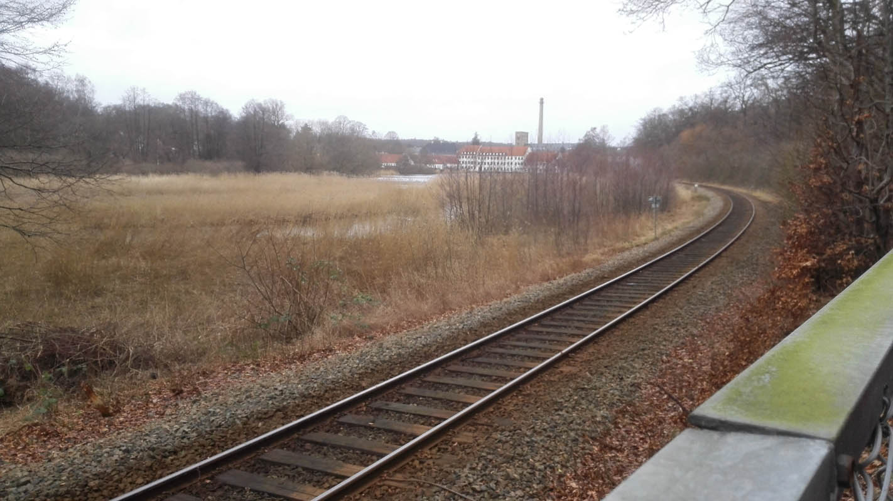

Studying in Denmark
From February til June I am doing an exchange semester at the Technical University of Denmark (Danmarks Tekniske Universitet). This is the first time for me that I'll study and live abroad.
Posts
| Date | |
|---|---|
| 20160107 | Learning Danish |
| 20160110 | Practical preparations |
Camera roll

Brede Værk

Nærumbanen near Brede
 Molleåen
Molleåen
 Holte
Holte
 Lyngby Sø
Lyngby Sø
 Vandledningsstien, Gladaxe
Vandledningsstien, Gladaxe
 Carlsberg Visitor Center
Carlsberg Visitor Center
 Jægersborg Vandtårn (water tower was converted to student housing)
Jægersborg Vandtårn (water tower was converted to student housing)
 Furesø
Furesø
 Forest near Holte
Forest near Holte
 Nordbanen near Holte
Nordbanen near Holte
 Hestkøbgård, Birkerød
Hestkøbgård, Birkerød
 'Vigen', Birkerød
'Vigen', Birkerød